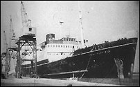

CHAPTER TWO
Heavy Ethics
In all the broad Universe there is no other
hope for Man than ourselves.
- L. RON HUBBARD, Ron's
Journal 1967
"Ethics" were tightening up in the
Scientology world. Since the mid-1960s, the Orgs have been managed on a strict system.
Staff members add up points to measure their production. For an Auditor this is the number
of "Well Done Auditing Hours"; for a Letter Registrar, letters in and out. Some
jobs are less readily reduced to statistics: Even students doing Scientology courses keep
"stats," where every word checked, every page read, every minute of tape heard,
every "clay demo" and every "check-out" has a point value. The stats
are graphed, from the income of an Organization, down to the number of toilets cleaned.
Staff members are assigned an "Ethics
Condition" every week in accordance with their stats. A slight upward trend on the
graph is called Normal, while a level graph, or a slight downtrend, is Emergency. From top
to bottom the Conditions are Power, Affluence, Normal, Emergency, Danger, Non-Existence,
Liability, Doubt, Enemy, Treason, Confusion. For each Ethics Condition, there is a
"Formula," through the application of which the individual's star is supposed to
rise.
Hubbard insisted that his Ethics system should also be
applied to "wogs" (non-Scientologists). At Saint Hill this quickly went from the
vaguely to the utterly ridiculous. A local caterer who ran a mobile canteen was put into a
condition of Liability in part for running out of apple pie. When he failed to apply the
Liability Formula, he was declared Suppressive, which meant that Scientologists could not
communicate with him, let alone buy his replenished stocks of apple pie. 1
By autumn 1967, Hubbard was living in a villa on Las
Palmas, adding the final touches to the OT 3 Course, and putting the Sea Organization (as
the Sea Project had become) through its paces. On Las Palmas he tested out his
"Awards and Penalties" for Ethics Conditions on the Sea Org. The penalties for
lower Conditions included deprivation of sleep for a set time (often several days), and
the assignment of physical labor. Hubbard boasted in a September Policy Letter that
penalties in the Sea Org were "much worse" than those for the other Scientology
Orgs. The milder non-Sea Org penalty for Non-Existence required that an offender
"Must wear old clothes. May not bathe. Women must not wear makeup or have hairdo's.
Men may not shave. No lunch hour is given and such persons are expected not to leave the
premises. Lowest pay with no bonuses." 2
Pay was pitiably low in Scientology Organizations anyway.
On September 20, Hubbard spoke of his new Sea Org, and
the release of OT 3, in a lecture taped in Las Palmas. Scientologists call this lecture
"RJ 67" for "Ron's Journal 1967." Hubbard dubbed the third Operating
Thetan level "the Wall of Fire." OT 3 concerned an incident which he said
occurred "on this planet, and on the other seventy-five planets which form this
Confederacy, seventy-five million years ago." Hubbard claimed that exposure to OT 3
is fatal to the uninitiated: "The material involved in this sector is so vicious that
it is carefully arranged to kill anyone if he discovers the exact truth of it. . . . I am
very sure that I was the first one that ever did live through any attempt to attain that
material."
Hubbard claimed he had broken a knee, an arm, and his
back during the course of his research. He attributed this to the tremendous increase in
"OT power" he achieved doing OT 3, making accidental damage to his body all too
easy. While he was certainly accident prone at times (a characteristic of those surrounded
by Suppressives, according to Hubbard), the cause was not necessarily paranormal. The
evidence does not support any of his claims of injury.
In RJ 67, Hubbard spoke of an international conspiracy
to destroy Scientology. From the early days Hubbard had felt that a group of "vested
interests" was trying to keep both Dianetics and Scientology down. Hubbard's major
targets had been the medical and the psychiatric professions.
According to RJ 67, the attack on Scientology had
achieved epic proportions. It was vital for the Conspiracy which dominated the affairs of
the world to crush Scientology. Hubbard claimed that his wife, the Guardian, had unearthed
the highest level of the Conspiracy, the ten or dozen men who determined the fate of
Earth: "They are members of the Bank of England, and other higher financial circles.
They own and control newspaper chains, and they are all, oddly enough, directors in all
the mental health groups in the world." Newspaper baron Cecil King was one of the ten
(or twelve). Hubbard also claimed that the then Prime Minister of Britain, Harold Wilson,
was controlled by these men, as were many other heads of state.
Hubbard ended RJ 67 with a message of hope: "From
here on the world will change. But if it changes at all, and if it recovers, it will be
because of the Scientologist, it will be because of the Organization. . . . In all the
broad Universe there is no other hope for Man than ourselves."
A larger vessel had been purchased, and sailed with an
inexperienced crew to meet Hubbard at Las Palmas. The Avon River was a 414-ton
trawler. Her first voyage, from Hull, was reported in the British press after her
non-Scientologist captain's return. Captain John Jones and the chief engineer were the
only professional sailors aboard. Jones called it the strangest trip of his life:
My crew were sixteen men and four women
Scientologists, who wouldn't know a trawler from a tramcar. But they intended to sail this
tub 4,000 miles in accordance with the Org Book. I was instructed not to use any
electrical equipment apart from the lights, radio and direction finder. We had radar and
other advanced equipment which I was not allowed to use. I was told it was all in the Org
Book, which was to be obeyed without question. We tried these methods. Getting out of Hull
we bumped the dock. Then, using the Org Book navigation system based on radio beams from
the BBC and other stations, we got down off Lowestoft before the navigator admitted he was
lost. I stuck to my watch and sextant, so at least I knew where we were. 3
Possibly this novel method of navigation, depending
solely on radio, harked back to Hubbard's 1940 Alaska Radio Experimental Expedition.
On Las Palmas, the crew of the Avon River
became guinea pigs for Hubbard's most advanced "research" into Ethics, or Heavy
Ethics, as it came to be known. New lower Ethics Conditions were issued, each with a
series of steps. The individual assigned a low Condition was expected to work through the
Ethics Formulas progressing up through the Conditions. The poor woman who assisted Hubbard
in his research into the Condition of Liability had to wear a dirty gray rag on her arm,
to show her deficiency to her colleagues. In the Condition of Doubt, she walked around
with a black mark on her cheek and a large, oily chain about her wrist.
The Avon River's radio operator was ordered
by Hubbard to remain awake until a new radio had arrived and been fitted on the bridge.
The radio arrived after five days, the operator having complied with the
"Commodore's" order. Hubbard seemed obsessed with sleep deprivation. It was one
of the accusations made against him by Sara Northrup sixteen years before in her divorce
complaint. At about this time, one of the Sea Org crew suggested that their six-month
contract be extended to a billion years. Hubbard adopted the suggestion with gusto, and
Sea Org members still sign a billion-year contract, boasting the motto "We Come
Back," life after life.
On October 6, new Formulas were issued for the Ethics
Conditions. The Liability Formula contained the alarming order to "Deliver an
effective blow to the enemies of the group one has been pretending to be part of despite
personal danger." The invitation was obvious. The step remains a part of the
Liability Formula, and any Scientologist assigned Liability (which happens frequently)
must comply with it. The original Treason formula was shorter-lived, and included:
"1. Deliver a paralyzing blow to the enemies of the group one has worked against and
betrayed. 2. Perform a self-damaging act that furthers the purposes and or objectives of
the group one has betrayed." This Formula was abandoned a year later. 4
Twelve days later, Hubbard issued "Penalties for
Lower Conditions" which included: "LIABILITY - Suspension of Pay and a dirty
grey rag on left arm, and day and night confinement to org premises. TREASON - ... a black
mark on left cheek ... ENEMY - SP Order. Fair Game. May be deprived of property or injured
by any means by any Scientologist without any discipline of the Scientologist. May be
tricked, sued or lied to or destroyed [punctuation sic]." 5
 In November, the Hubbard Explorational Company
bought the Royal Scotsman (right), which for some years had been an
Irish Channel cattle ferry, which weighed in at 3,280 tons, eight times the tonnage of the
Avon River. The new owners requested permission from the Board of Trade to
re-register the ship as a "pleasure yacht," with clearance for a voyage to
Gibraltar. They were advised that considerable modifications would be necessary under the
"Safety of Life at Sea Convention" (SOLAS) of 1960. 6
A few days later, having docked the Royal Scotsman
in Southampton, the owners requested registration as a "whaling ship."
Permission was refused, and a detention order put on the vessel, preventing her from
leaving port.
Reporters were given a handout which said Hubbard had
already undertaken successful survey work in the English Channel, and was resuming this
work. The earlier survey was allegedly for oil and gas on the sea floor. Yet another
Hubbard expedition that failed to materialize. 7
Seeing the failure of his subordinates to extricate
the Scotsman from Southampton, Hubbard decided to take command, and flew from Las
Palmas with a twenty-man crew. The Royal Scotsman was hastily reregistered under
the flag of Sierra Leone. However, the name was misspelled, and the ship became the Royal
Scotman.
Permission was requested for a single voyage to Brest,
where the necessary repairs would be made. Permission was granted on November 28, and the Royal
Scotman sailed. The ship followed in the tradition of the Avon River, and
ran into fenders in the inner harbor. There were heavy storms in the English Channel, and
the ship nearly foundered off Brest. Hubbard ordered her to sail to Gibraltar, where the Avon
River was waiting. There was a heavy storm, and the hydraulic steering and the main
compass were inoperative. One generator was out of action, and there were women and
children aboard, but Gibraltar resolutely refused the Scotman entry. Eventually,
emergency steering was rigged up, and the Scotman was steered from the aft
docking bridge on directions from the main bridge via walkie-talkie. Finally the ship was
allowed to dock at Ibiza, in the Spanish Balearic Islands. 8
The ship travelled from port to port for several weeks
before settling to overwinter at Valencia, in Spain. A non-Scientologist crew member said
of Hubbard: "He called himself commodore and had four different types of peaked caps
.... He told me he thought I was a reporter."
This "wog" started the voyage as ship's
carpenter, but by being "upstat" ended it as Chief Officer. During the short
voyage he had a brush with Ethics. He was put in a Condition of Doubt for "defying an
order, encouraging desertion, tolerating mutinous meetings, and attempting to suborn the
Chief Engineer." The boatswain was put into a Condition of Enemy for
"undermining the Spanish crew, habitual drunkenness, holding nightly and morning
meetings, and derogating Scientology." 9
On New Year's Day 1968, Hubbard incorporated the
"Operation and Transport Corporation Ltda." [sic] through the
Panamanian consulate in Valencia. OTC took over from the Hubbard Explorational Company as
Hubbard's principal channel for extracting money from Scientology. He owned ninety-eight
of the 100 issued shares. Hubbard created a network of corporations the sheer complexity
of which has daunted most tax investigators. The Royal Scotman was re-registered
under the Panamanian flag, though she continued to sail under that of Sierra Leone. 10
A glamorous picture of life at sea was presented to
Scientologists the world over, and, when the stringent Scientology qualifications for Sea
Org membership were abandoned, its ranks swelled. Largely with people completely unskilled
in the nautical arts.
Sea Org members wore pseudo-naval uniforms, and were
assigned naval ranks, from the lowly "Swamper" to Hubbard's own exalted
"Commodore." The uniforms and ranks remain, in the largely landbound Sea Org.
In January 1968, Hubbard released OT levels 4 to 6. OT
4 was supposed to proof the individual (or "Pre-OT") against future
"implanting." Hubbard wheeled out the Clearing Course Implant list, and had his
devotees "mock-up" and "erase" the implants yet again. OT 5 and 6
consisted of drills to be done "exterior from the body." Those who audited these
levels usually admit later that their "exterior," or out-of-the-body, experience
was entirely subjective. A few claim they could do exactly what the materials required,
but do not even try to offer proof. Curiously, much of the highly secret material on
levels 5 and 6 came from Hubbard 's book The Creation of Human Ability, first
published in the mid-1950s.
The first Advanced Organization opened aboard the Royal
Scotman, to deliver these OT levels on New Year's Day, 1968. It was soon transferred
to shore in Alicante, and thence to Edinburgh. The Advanced Orgs (or AOs) were, and
remain, the only Church Organizations to deliver the Operating Thetan levels. From the
beginning, AOs were supposed to be run solely by Sea Org members. Meanwhile, a Scientology
magazine published an interview with an unlikely convert. William Burroughs, author of the
controversial Naked Lunch, had trained as a Scientology Auditor, and was a Grade
5, or "Power," release. Burroughs said: "I am convinced that whatever
anyone does, he will do it better after processing [auditing]." Burroughs later
became Clear number 1163, of which he said: "It feels marvellous! Things you've had
all your life, things you think nothing can be done about - suddenly they're not there any
more! And you know that these disabilities cannot return.'' 11
Burroughs' enthusiasm for Scientology did not last,
and his later work is peppered with abstruse attacks on Scientology. He even wrote a book
called Naked Scientology.
Scientology magazines were filled with news and
photographs of smiling musicians, authors, models, dancers, doctors and scientists who
espoused Scientology. Jazz composer Dave Brubeck's son went to Edinburgh to persuade a
friend to leave the dreaded cult, and ended up joining the Sea Org. Actress Karen Black
waxed lyrical about the benefits of auditing to other Hollywood stars. Bobby Richards, who
orchestrated the music for Goldfinger, said "I always get much more out of
Scientology than I expect." Scientologist Richard Grumm worked on the Mariner space
program. 12
In this climate, Hubbard decided to prove the validity
of "past lives" by taking the Avon River on a tour of the haunts of his
previous incarnations.
The "Whole Track Mission" was recorded in
the book Mission into Time. Hubbard would make a plasticine model of an area
before sending in a team to verify his predictions. They allegedly opened sealed caves,
and found there what Hubbard had predicted. A variety of legends sprang out of the
expedition. Among them that Hubbard was relocating caches of gold he had hidden in former
lifetimes, especially as a Roman tax collector (it has been suggested that his earlier
trip to Rhodesia was to recover the fortune buried in his supposed incarnation as Cecil
Rhodes). Far more exciting, and less widely known, however, is the space ship legend.
During the "Mission," Hubbard showed the
crew some notes about their next destination. It was a hidden "space-station" in
northern Corsica, "almost at the junction of the mainland and the northern peninsula
and possibly slightly west of the island's meridian," according to one member of the
"Mission," where a huge cavern, hidden among the rocks in mountainous terrain,
housed an immense Mothership and a fleet of smaller spacecraft. The spaceships were made
of a non-corrosive alloy, as yet undiscovered by earthlings. Only one palm print would
cause a slab of rock to slide away, revealing these chariots of the gods. The owners of
this machinery not only knew about reincarnation, they had even predicted Hubbard's palm
print.
Tales about this discovery were rife among Sea Org
members. Hubbard was going to use the Mothership to escape from Earth. The ship was
protected by atomic warheads. It awaited the return of a great leader, and there were
rumors about a "Space Org." On the day Hubbard was to be put to this final test,
the Mission was abandoned because of the trouble the Scotman was generating with
the port authorities in Valencia. Hubbard never returned to collect the Mothership.
The Royal Scotman had been asked several
times to shift its berth. The ship's Port Captain steadfastly refused. What the
Scientologists call a "flap" occurred, and the authorities, probably exacerbated
by this quite usual display of Sea Org arrogance, had to be placated. A new captain was
appointed, who did well for a short while, until the Scotman dragged anchor and nearly ran
aground. Commodore Hubbard stayed aboard the Avon River, promoting his wife, Mary
Sue, to the rank of Captain, and giving her command of the larger ship. The fleet moved to
Burriana, a few miles along the Spanish coast, for repairs to the Royal Scotman.
This time the Royal Scotman did run aground. The Commodore gravely assigned the
ship, and all who sailed on her, the Ethics Condition of Liability.
For several weeks a peculiar spectacle could be seen
travelling up and down the Spanish coast: a ship with filthy gray tarpaulins tied about
its funnel. Every crew member wore a gray rag. It is rumored that even Mary Sue's corgi
dog, Vixie, wore a gray rag about her neck. Mary Sue suffered the long hours, the poor
diet and the exhausting labor with the rest of the crew. Finally, the Royal Scotman
rejoined the Avon River in Marseilles. The crew paraded, sparkling in new
uniforms, and the Commodore held a ceremony to upgrade the ship from Liability, so ending
the "Liability Cruise." Soon after, Hubbard moved with his top Aides to the Royal
Scotman, which became the Flagship of the Sea Org fleet. Scientologists called it
simply "Flag." 13
In 1968, Hubbard's Ethics was put into action with the
chain-locker punishment. A chain-locker is "a dark hole where the anchor chains are
stored; cold, wet and rats," to quote one ex-Sea Org officer. The lockers are below
the steering in the bowels of the ship. A tiny manhole gives access, and they are unlit.
When a crew member was in a low enough Ethics Condition, he or she would be put in a
chainlocker for up to two weeks.
John McMaster says a small child, perhaps five years
old, was once consigned to a chain-locker. He says she was a deaf mute, and that Hubbard
had assigned her an Ethics condition for which the formula is "Find out who you
really are." She was not to leave the chain locker until she completed the formula by
writing her name. McMaster says Hubbard came to him late one night in some distress, and
asked him to let the child out. He did, cursing Hubbard the while. Another witness claims
that a three-year-old was once put in the locker.
Another Ethics Condition had the miscreant put into
"old rusty tanks, way below the ship, with filthy bilge water, no air, and hardly
sitting height... for anything from twenty-four hours to a week... getting their oxygen
via tubes, and with Masters-at-Arms [Ethics Officers] checking outside to hear if the
hammering continued. Food was occasionally given in buckets," according to a former
Sea Org executive.
The miscreants were kept awake, often for days on end.
They ate from the communal food bucket with their blistered and filthy hands. They chipped
away at the rust unceasingly. As another witness has tactfully put it, "there were no
bathroom facilities." While these "penances" were being doled out, the
first "overboard" occurred. The ships were docked in Melilla, Morocco, in May
1968. One of the ship's executives was ashore and noticed that the hawsers holding the Scotman
and the Avon River were crossed. He undid a hawser, and found himself grappling
with the full mass of an unrestrained ship as it drifted away from the dock.
Mary Sue Hubbard ordered that the officer be hurled
from the deck. There was a tremendous crash as he hit the water. Ships have a
"rubbing strake" beneath the waterline to keep other ships at bay in a
collision. The overboarded officer had hit the steel rubbing strake! The crew peered
anxiously over the side waiting for the corpse to float to the surface.
The bedraggled officer was surprised when he walked up
the gangplank and found the crew still craning over the far side of the ship. Fortunately
for Mrs. Hubbard's conscience, and the failing public repute of Scientology, the officer
concerned was not only a good swimmer, but also expert at Judo. Most fortunate of all, he
had seen the rubbing strake, and the explosive crash was caused when he thrust himself
away as he fell. For a short time, overboarding was abandoned.
It is difficult to comprehend the stoicism with which
some Scientologists suffered the Ethics Conditions. It is remarkable even to many
ex-Scientologists. It is even more remarkable that most Scientologists have probably never
heard of the chain-locker, bilge tank or overboarding punishments. Scientologists were
used to Hubbard's auditing techniques, where they did not question the reasoning behind a
set of commands, but simply answered or carried them out. Many spent their time trying to
keep out of trouble, or, when trouble unavoidably came, getting out of the Ethics
Condition quickly by whatever means they could.
Most Sea Org members accepted these bizarre practices
out of devotion to Hubbard. It is impossible to add to these stark details a convincing
picture of Hubbard's charisma. The Sea Org saw themselves as the elite, the chosen few,
who would return life after life to rejoin their leader in the conquest of suffering.
Hubbard released religious and military fervors in his disciples.
Back on dry land in East Grinstead the farce of
Scientology Ethics, and its applicability in dealing with non-Scientologists, continued
with a letter to twenty-two local businesses:
As a result of a recent survey of shops in the
East Grinstead area, your shop together with a handful of others, has been declared out of
bounds for Scientologists .... These shops have indicated that they do not wish
Scientology to expand in East Grinstead and we are, therefore, relieving them of the
painful experience of taking our money. 14
The banned "shops" included a solicitor's
firm. Another business was "highly commended" for displaying Scientology books,
in the face of local criticism.
Hubbard's Public Relations and Ethics
"technologies" rebounded in Britain. In July 1968, the British government
finally made its move.
FOOTNOTES
Additional sources: RJ
67; correspondence with Hana Eltringham/Whitfield; interviews with O.R., a former Sea Org
executive; interviews with McMaster; interview with Virginia Downsborough; also interviews
with Neville Chamberlin, Kenneth Urquhart, Bill Robertson, Phil Spickler
1. News of the
World, 28 July 1968; Evans, p.88; interview with witness
2. HCOPL, "Conditions,
Awards, Penalties," 27 September 1967 (not in Organization Executive Course)
3. Sunday Mirror, 24
December 1967
4. HCOPL, "Condition of
Liability," 6 October 1967 (not in Organization Executive Course)
5. HCOPL, "Penalties for
Lower Conditions," 18 October 1967 (not in Organization Executive Course)
6. Garrison, Playing
Dirty, p.75; Foster report, para 216
7. Sunday Mirror, 18
November 1967
8. Foster report, para 216
9. The People, 18
February 1968
10. Articles of
incorporation OTC; CSC vs. IRS, 24 September 1984
11. Auditor 32,
p.5; Auditor 39
12. Auditors
37 & 39
13. Vosper, p. 178; Auditor
43
14. Sunday Express,
14 July 1968 |